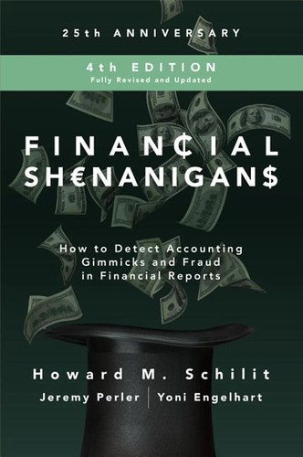

霍华德·施利特（Howard M. Schilit）是法务会计领域最具影响力的实践者之一。他于1994年创立了财务研究与分析中心（Center for Financial Research and Analysis, CFRA），专门为机构投资者提供上市公司财务质量的独立评估。他的代表作《Financial Shenanigans》于1993年由麦格劳-希尔（McGraw-Hill）首次出版，目前已出至第四版（2018年），后两版由杰里米·佩勒（Jeremy Perler）和约尼·恩格尔哈特（Yoni Engelhart）加入合著。佩勒曾在施利特的CFRA工作多年，后来成为知名空头研究机构Citron Research的分析合作者；恩格尔哈特则在对冲基金行业从事法务会计分析。三位作者的组合确保了本书兼具深厚的学术底蕴和前沿的实战经验。
全书围绕三大类财务操纵手法展开：盈利操纵（earnings manipulation）、现金流操纵（cash flow manipulation）和关键指标操纵（key metrics manipulation）。在盈利操纵部分，作者详细拆解了过早确认收入、虚报一次性收益、将经常性费用归类为非经常性项目、推迟确认费用等典型手法。在现金流操纵部分——这是第四版新增的重要章节——作者指出许多投资者误以为现金流量表难以操纵，但实际上企业可以通过将融资活动现金流入伪装为经营活动现金流、出售应收账款、操纵营运资本支付时间等方式粉饰经营性现金流数据。在关键指标操纵部分，作者揭示了企业如何通过重新定义非GAAP指标、调整同店销售口径、操纵用户数量统计等方式误导投资者。全书引用了超过110个真实上市公司案例，涵盖从安然（Enron）、世通（WorldCom）等经典案例到近年来的Valeant Pharmaceuticals等新型案例。
本书第四版获得了投资界重量级人物的高度评价。Coatue Management创始人菲利普·拉丰（Philippe Laffont）评价道："如果你能避开问题，做一个好投资者就容易得多。这本书是所有希望增强法务会计直觉的投资者的必读之作。"（"It's so much easier to be a good investor if you can avoid problems. This book is required reading for all investors who wish to enhance their forensic intuition."）Tiger Global创始人蔡斯·科尔曼（Chase Coleman）称："霍华德·施利特和他的团队是识别欺骗性和操纵性会计的真正专家。《Financial Shenanigans》是每一位审慎投资者的无价资源。"（"Howard Schilit and his team are true experts at identifying deceptive and manipulative accounting. Financial Shenanigans is an invaluable resource for every discerning investor."）Gotham Asset Management创始人乔尔·格林布拉特（Joel Greenblatt）则评论道："尽管会计无疑是商业的语言，但霍华德是教投资者如何读懂字里行间的大师。"（"Though Accounting is surely the language of business, Howard is the master of teaching investors how to read between the lines."）
本书中文版《财务诡计》由机械工业出版社于2019年出版（对应英文第四版）。对于投资者而言，施利特及其合著者提供的不是一套抽象的理论框架，而是一份极为具体的"财务操纵手法清单"——投资者可以逐项对照所持有或关注的公司财报进行排查。无论是分析美股还是A股，这种系统性的法务会计分析能力都是避免踩雷的基本功。